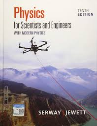

AP Physics C: Mechanics is a calculus-based, college-level introductory physics course. Students cultivate deep understanding of classical mechanics by building physical models through inquiry-based investigations. The course is equivalent to the first semester of an introductory college calculus-based physics sequence.
Students develop understanding across seven domains: kinematics, forces and translational dynamics, work/energy/power, linear momentum, torque and rotational dynamics, energy and momentum of rotating systems, and oscillations. Throughout, students practice three science practices — creating representations, applying mathematical routines, and scientific argumentation — by designing experiments, deriving expressions, and justifying claims with evidence.
A minimum of 25% of instructional time is dedicated to hands-on, inquiry-based laboratory work. Students maintain a laboratory notebook throughout the year; colleges may request lab materials as part of the credit-granting process.
Prerequisites: Students should have taken, or be concurrently enrolled in, calculus. Comfort with derivatives and integrals is essential by mid-year.
This course includes an interactive knowledge graph linking concepts across units. Use the "Knowledge Graph" tab above to explore connections between mechanics topics.
| Course: | AP® Physics C: Mechanics |
| Academic Year: | 2026–2027 |
| Instructor: | Jeff Ling |
| Email: | jeffling@ghedu.com |
| Office: | 冬韵103 |
| Prerequisite: | Calculus (taken or concurrent) |
| First Day: | August 31, 2026 |
Upon completion of this course, students will be able to:
University Physics (Young & Freedman) or Physics for Scientists and Engineers (Serway & Jewett). Supplementary: Halliday/Resnick Fundamentals of Physics (reference).

Each semester is graded independently using the same standard. The midterm assessment accounts for 40% of the semester grade and the final assessment for 60%. Each is composed as follows:
| Category | Weight |
|---|---|
| Attendance | 15% |
| Class Participation | 15% |
| Homework | 20% |
| Midterm Exam | 50% |
| Category | Weight |
|---|---|
| Attendance | 15% |
| Class Participation | 15% |
| Homework | 20% |
| Final Exam | 50% |
- Late Work Policy: 10% deduction per day late; maximum 50% after 3 days late. Lab reports more than one week late receive a maximum of 40%.
- Lab Notebook: Students maintain a bound lab notebook throughout the course. Each entry must include date, question/hypothesis, procedure, data table, analysis, conclusion, and error discussion. Colleges may request lab materials as evidence for credit.
- Academic Integrity: Derivations copied from peers or AI tools will receive zero credit. AI tools may be used to check understanding, but never to generate solutions for graded work.
A four-function, scientific, or graphing calculator is permitted on both sections. The AP Physics C: Mechanics Table of Information and Equations is provided.
| Section | Content | Questions | Time | Weight |
|---|---|---|---|---|
| Section I | Multiple Choice (scenario-based, single-select) | 42 | 85 min | 50% |
| Section II | Free Response (4 question types) | 4 | 95 min | 50% |
| FRQ | Type | Description |
|---|---|---|
| Q1 | Mathematical Routines (MR) | Derive symbolic expressions, calculate quantities, compare results across scenarios |
| Q2 | Translation Between Representations (TBR) | Move between graphical, mathematical, and verbal descriptions of physical situations |
| Q3 | Experimental Design and Analysis (EDA) | Design an experiment, identify data to collect, analyze hypothetical data, identify errors |
| Q4 | Qualitative/Quantitative Translation (QQT) | Use physical reasoning to justify a quantitative claim, or predict qualitative behavior from a mathematical relationship |
| Unit | Topic | MCQ Weight |
|---|---|---|
| 1 | Kinematics | 10–15% |
| 2 | Force and Translational Dynamics | 20–25% |
| 3 | Work, Energy, and Power | 15–25% |
| 4 | Linear Momentum | 10–20% |
| 5 | Torque and Rotational Dynamics | 10–15% |
| 6 | Energy and Momentum of Rotating Systems | 10–15% |
| 7 | Oscillations | 10–15% |
Preparation includes weekly practice problems, unit exams, derivation workshops, and a full-length mock exam in the final week of April.
| Weeks | Dates | Unit / Topic |
|---|---|---|
| 1–3 | Aug 31 – Sep 18 | Unit 1: Kinematics — Complete Sep 18 |
| 3–8 | Sep 14 – Oct 30 | Unit 2: Force and Translational Dynamics — Complete Oct 30 (Labs 2 & 3 due) |
| 8–11 | Oct 26 – Nov 27 | Unit 3: Work, Energy, and Power — Complete Nov 27 (Lab 4 due) |
| 11–13 | Nov 23 – Dec 11 | Unit 4: Linear Momentum — Complete Dec 11 (Lab 5 due) |
| 13–16 | Dec 7 – Dec 31 | Unit 5: Torque and Rotational Dynamics — Complete Dec 31 (Lab 6 due) |
| 17 | Jan 4–8, 2027 | Unit 6 (Part 1): Rotational KE, Torque & Work, Angular Momentum (6.1–6.3) |
| 18 | Jan 11–15 | Final Exam Week (Units 1–5 + 6.1–6.3) |
Winter Break: January 16 – February 28, 2027
| Weeks | Dates | Unit / Topic |
|---|---|---|
| 18–19 | Mar 1–12 | Unit 6 (Part 2): Conservation of Angular Momentum, Rolling, Satellites — Unit 6 Complete Mar 12 (Labs 7 & 8 due) |
| 19–22 | Mar 8–31 | Unit 7: Oscillations (SHM, Pendulums) — Unit 7 Complete Mar 31 (Labs 9 & 10 due) — all content done |
| — | Apr 6–9 | Comprehensive Content Review (Units 1–4) |
| — | Apr 12–16 | FRQ Intensive Practice (derivation workshop) |
| — | Apr 19–23 | Timed Mixed Practice (MCQ + FRQ) |
| — | Apr 26–30 | Full Mock AP Exam |
| — | May 3–14 | AP Physics C: Mechanics Exam |
| — | May 17 – Jun 4 | Post-AP Capstone Project |
| — | Jun 7–11 | Final Exam Week |
| Sep 18 | Unit 1 complete |
| Oct 30 | Unit 2 complete (Labs 2 & 3 due) |
| Nov 27 | Unit 3 complete (Lab 4 due) |
| Dec 11 | Unit 4 complete (Lab 5 due) |
| Dec 31 | Unit 5 complete (Lab 6 due) |
| Jan 8, 2027 | Unit 6 (6.1–6.3) complete |
| Mar 12 | Unit 6 complete (Labs 7 & 8 due) |
| Mar 31 | Unit 7 complete; all content done (Labs 9 & 10 due) |
| Apr 26–30 | Full Mock AP Exam |
| May 3–14 | AP Exam |
Note: Schedule is subject to adjustment based on class progress and lab scheduling needs.
Click a node to view content